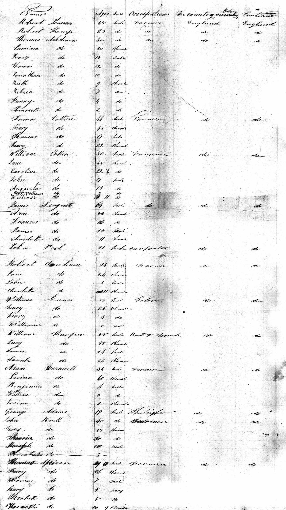
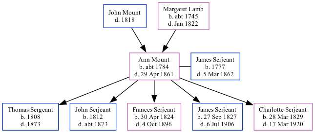

Ann M Serjeant (née Mount) c1784 - 1861
[ Home ] | [ Calendar ] | [ Surnames Index ] | [ Family History ]The child of John Mount and Margaret Lamb, Ann Mount, the five times great-aunt of Nigel Horne, was born in Kent, England c. 17841, was baptized in St Nicholas-at-Wade, Kent, England on Dec 23, 1787 and married James Serjeant (with whom she had 5 children: Thomas, John, Frances Elizabeth, James Edward and Charlotte) in Chislet, Kent on Nov 10, 18061 (Recorded at St. Nicholas). She arrived in New York, New York, USA on May 14, 1841 with her husband James (arrived from London on the Wellington).
She died on Apr 29, 1861 in Allen, Indiana, USA.
Parents
- Margaret was born c. 1745
Children
- Thomas was born in 1808
- John was born in 1812
- Frances Elizabeth was born on Apr 30, 1824
- James Edward was born on Sep 27, 1827
- Charlotte was born on Mar 28, 1829
Citations
- Kent, England, Tyler Index to Parish Registers, 1538-1874 Online publication - Provo, UT, USA: Ancestry.com Operations, Inc., 2010. This collection was indexed by Ancestry World Archives Project contributors.Original data - Frank Watt Tyler. The Tyler Collection. Canterbury, Kent, England: The Institute of Herald
Media
Wellington Manifest

Canterbury Marriage Banns Transcription - GBPRS-CANT-M-94015737-1
England Marriages 1538-1973 Transcription - R_847899466
Canterbury Marriage Banns Transcription - GBPRS-CANT-M-94015737-2
England Marriages 1538-1973 - R_847899466/2
Family Tree
Generated by Ged2Site. Last updated on Jul 20, 2025